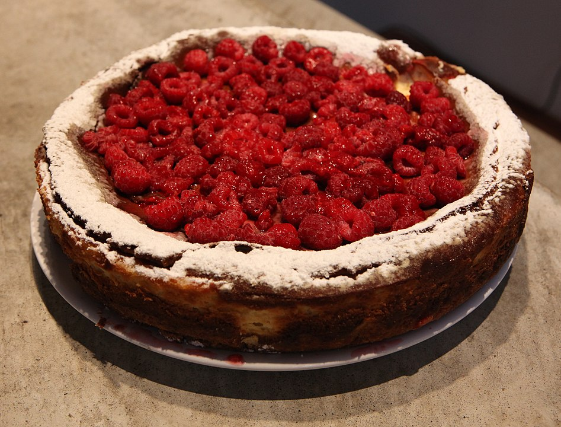

Oreo Cheesecake Cups

These cheesecake cups are perfectly sized individual treats!
Ingredients
- 12 chocolate sandwich cookies (such as Oreo®)
- 2 (8 ounce) packages cream cheese, softened
- 2 large eggs, lightly beaten
- ½ cup sour cream
- ½ cup white sugar
- ½ teaspoon vanilla extract
- 6 chocolate sandwich cookies (such as Oreo®), chopped
Steps
- Preheat the oven to 275 degrees F (135 degrees C). Line a 12-cup muffin tin with paper liners; place 1 cookie into each.
- Beat cream cheese in a medium bowl with an electric mixer until creamy. Gradually add eggs, sour cream, sugar, and vanilla extract, beating well after each addition. Stir in chopped cookies with a spatula.
- Spoon batter into the prepared tin, filling each cup almost to the top.
- Bake in the preheated oven until set, 20 to 22 minutes. Transfer cups to a cooling rack. Refrigerate until firm, at least 4 hours.